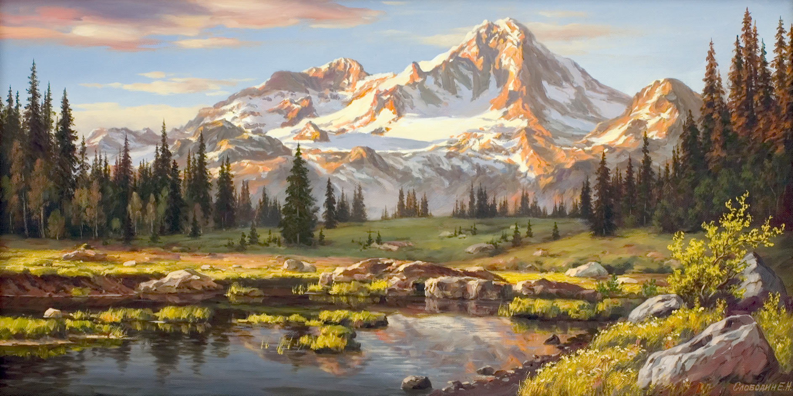
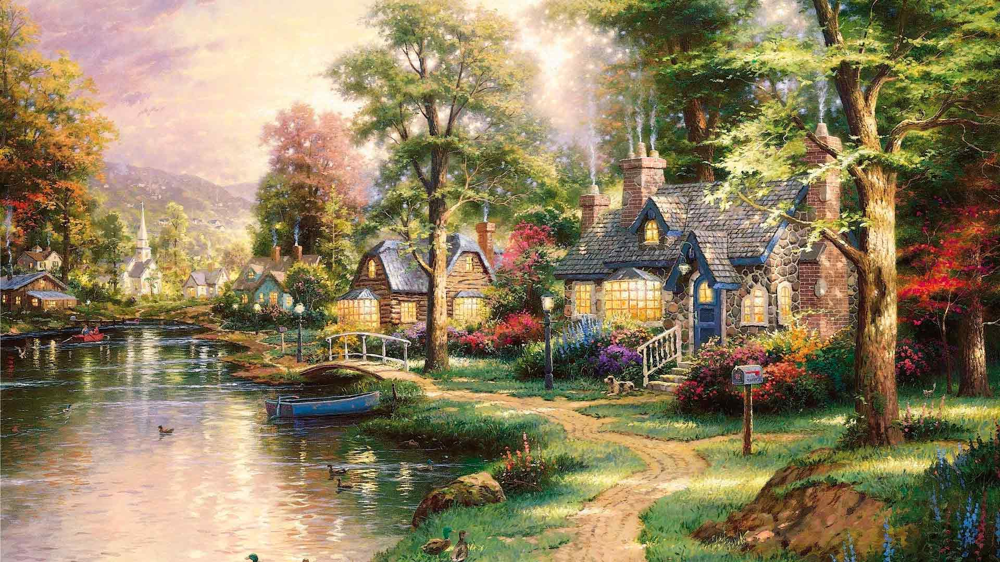
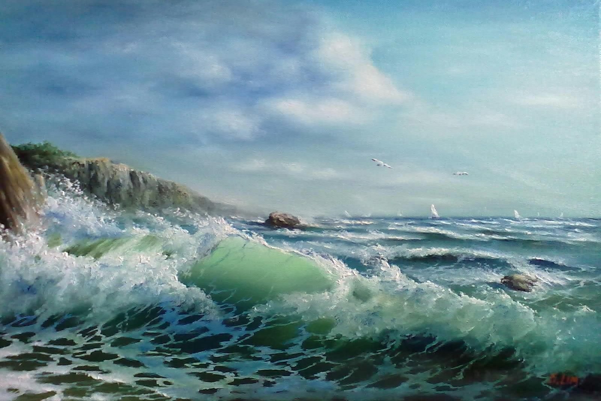

Живопись —
вид изобразительного искусства, связанный с передачей зрительных образов посредством нанесения красок на поверхность.
Существует огромное разнообразие стилей и направлений в изобразительном искусстве. Часто они не имеют четко выраженных границ и плавно переходят из одного в другой, находясь в непрерывном развитии, смешении и противодействии.
C некоторыми из них знакомит мой сайт!
Барокко - появился в эпоху Позднего Возрождения, имеет в своей основе модификацию и дальнейшее усложнение ордерной системы древнеримской архитектуры.
Классицизм - художественный стиль и эстетическое направление в европейской литературе и искусстве 17 — начала 19 вв., одной из важных черт которых являлось обращение к образам и формам античной литературы и искусства, как идеальному эстетическому эталону.
Сюрреализм - совокупность экспериментальных, модернистских, подчеркнуто необычных, поисковых начинаний в искусстве
Сентиментазм - направление западного искусства второй половины XVIII., выражающее разочарование в цивилизации, основанной на идеалах разума. Сентиментализм провозглашает чувство, уединенное размышление, простоту сельской жизни “маленького человека”.
Романтизм - идейное и художественное направление в европейской и американской живописи конца 18 — начала 19 веков, выдвигавшее на первый план индивидуальность, наделяя ее идеальными устремлениями.
Реализм - направление в искусстве, характеризующееся изображением социальных, психологических и прочих явлений, максимально соответствующим действительности.
Импрессионизм - направление в европейской живописи, зародившееся во Франции в середине 19 века. Импрессионисты избегали всяких подробностей в рисунке и пытались уловить общее впечатление от того, что видит глаз в конкретный момент.
-

Горный пейзаж
-

Пейзаж Томаса Кинкейда
-

Морской прибой